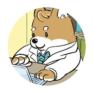
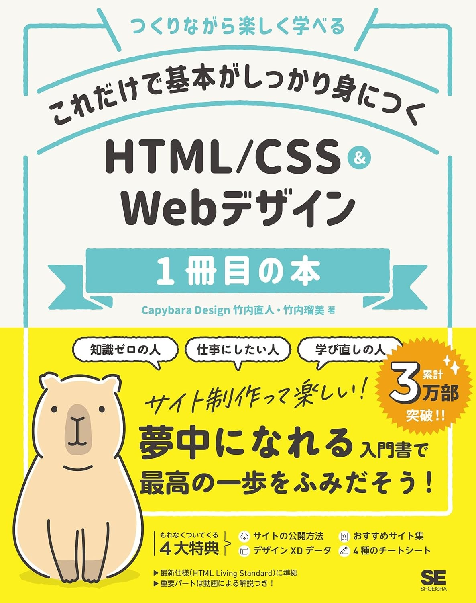
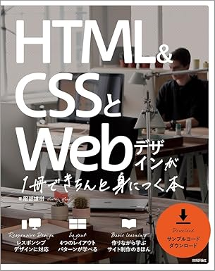
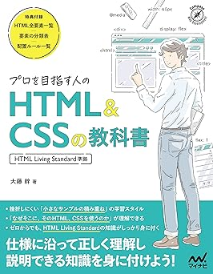
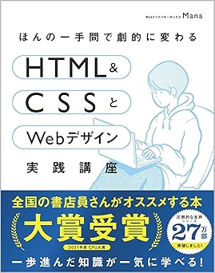
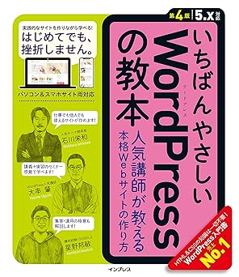

study
修学中に作った
制作物
制作物
here
-
- プログラミングチュートリアル(YouTubeチャンネル)
- 勉強で初めて使用した教材動画。
動画投稿者Shinさんの動画をもとに模写コーディングをし、動くかどうかの確認をする工程を繰り返す。いくつかエラーが出て動かない事があったが、触っているうちにVSCodeの扱いにも慣れてきて、コーディングの土台を作ることが出来た。
動画内容自体は今の私にとっては難しかったが、ゆくゆくは勉学として視聴できるレベルになりたい。

-

- これだけで基本がしっかり身につく HTML/CSS&Webデザイン1冊目の本
- 改めて1から勉学するために読了した1冊。
実際に1行ずつコードを打ちながら変化を確かめる構成になっており、基本的なコードを中心に構成されているためとてもわかりやすかった。
全体的な書式や手本のデザインも和やかで親しみやすい。
つまづいた時に読み直すも良し、習得するために何度も読み直すのも良し。タイトル通り、1冊目におすすめの本。
-

- HTML&CSSとWebデザインが1冊できちんと身につく本
- 学んだ教材2冊目。
1つのWebショップHPを作る流れでコードの打ち方を学ぼうというスタイル。わかりやすさは1冊目と同じだが、最初の章から1つのページ編集に取り掛かるため、完成した際の達成感がより高い。初心者向けながらも、レスポンシブや横スクロールによる画像閲覧など、スマホ向けのコードも早い段階から組み込まれてあり、より現代的なコーディングを1から学べる。
-

- プロを目指す人のHTML&CSSの教科書
- レッスンの流れとしては穴埋め式に1行を自分で入力し、変化を確かめる。が、こちらの教材で扱うコードは少し難易度が上がる。
この教材は勉学としても扱えるが、何か困った時や少し難しいことを実現したいときの辞書としても利用できる。「基本的なコードは見なくても打てるようになった」という方に目を通してもらいたい。
-

- ほんの一手間で劇的に変わる HTML&CSSとWebデザイン実践講座
- この教材の特徴と言えば「自分でカスタマイズ」するという点であろう。
章ごとに座学をして復習の練習小問題を終えた後に、座学に則って完成されてある付属データをもとに、お題を自分で考えて改変するという作業を行い勉強する。お題を考えることもさることながら、どこを書き換えると自分の思った通りに変化するのかを理解しながら作業を進めなければならない。
より実践的な教材だった。
修学中に作った
制作物here -

- いちばんやさしいWordpressの教本
- 簡単にWebサイトを作れる事をレッスン形式で教えてくれた教材。
6年前の本のため、載っている手順通りではうまく行かない事が多かった。ただ、ITは日進月歩であることを肌で感じながら、自分で調べて適応していくスキルを身に付けるという意味でも良い勉強になる。
FTPにも触れておきたいのだが、個人的にWordPressを学習する際にサーバーレンタル料が発生するのが悩ましい。
top